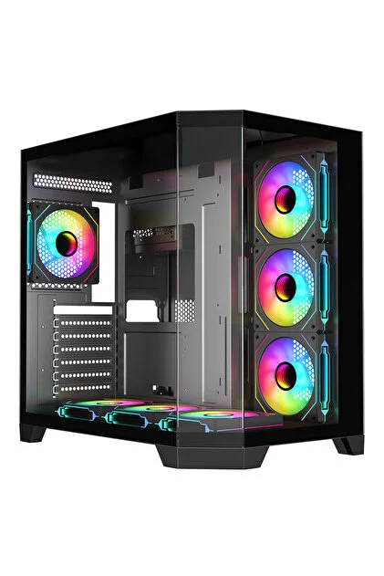

Bilgisayar Kasası Nedir ve Ne İşe Yarar?
1. Bilgisayar Kasası Nedir?
Bilgisayar kasası (PC Case); anakart, işlemci, ekran kartı, RAM, depolama birimleri (SSD/HDD) ve güç kaynağı (PSU) gibi tüm donanım bileşenlerini içinde barındıran, koruyan ve bir arada tutan dış gövdedir. Ve şuna benzemektedir

2. Ne İşe Yarar?
- Fiziksel Koruma ve Dayanıklılık: Hassas elektronik parçaları toz, sıvı teması, darbe, evcil hayvan müdahalesi veya kaza sonucu oluşabilecek fiziksel hasarlardan korur.
- Hava Akışı ve Soğutma Düzeni: Doğru yerleştirilmiş fanlar ve hava kanalları sayesinde kasa içerisinde düzenli bir hava sirkülasyonu (önden soğuk hava girişi, arkadan ve üstten sıcak hava çıkışı) oluşturarak bileşenlerin serin çalışmasını sağlar.
- Statik Elektrik Koruması ve Topraklama: Metal gövdesi sayesinde statik elektriğin bileşenlere zarar vermesini engeller ve güvenli bir topraklama hattı sunar.
- Ses ve Gürültü İzolasyonu: İçeride yüksek devirde çalışan fanların, ekran kartının veya mekanik disklerin çıkardığı sesi yalıtarak daha sessiz bir çalışma ortamı sağlar
- Kablolama ve Düzen (Kablo Yönetimi): Güç kaynağının ve veri kablolarının arka panelde düzenlenmesine olanak tanır. Bu sayede hem kasa içi şık görünür hem de hava akışı engellenmemiş olur.
- Bağlantı Kolaylığı (Ön Panel I/O): Bilgisayarın ön veya üst kısmında yer alan USB, kulaklık/mikrofon girişleri ve güç düğmesi sayesinde harici cihazların ana karta doğrudan erişimini kolaylaştırır.